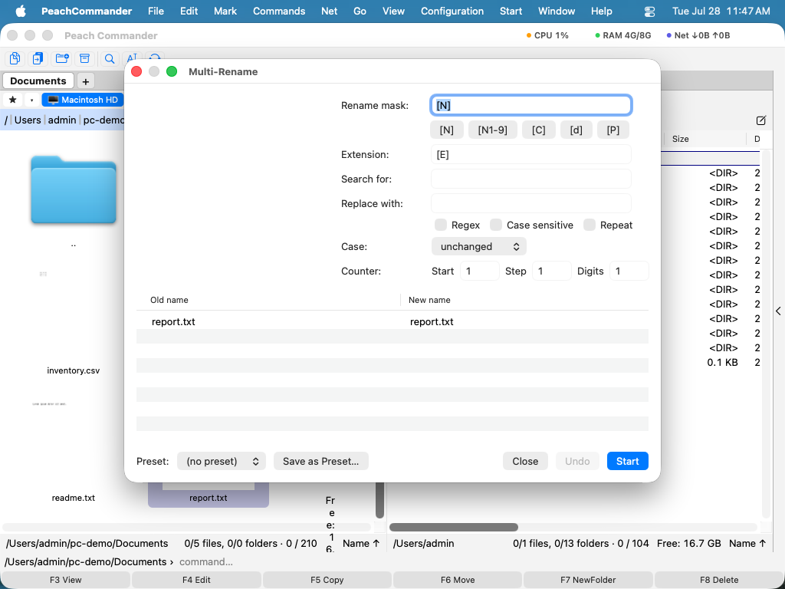

Viele Dateien umbenennen
Das Mehrfach-Umbenennen-Werkzeug benennt einen ganzen Stapel von Dateien in einem Durchgang um. Statt Namen einzeln zu bearbeiten, beschreiben Sie die Änderung einmal — ein Namensmuster, ein Suchen-und-Ersetzen, ein Nummerierungsschema oder eine Änderung der Groß-/Kleinschreibung — und Peach Commander wendet sie auf jede ausgewählte Datei an. Eine Live-Vorschau zeigt genau, wie jede Datei heißen wird, bevor irgendetwas geschieht, und ein einziges Rückgängig stellt die ursprünglichen Namen wieder her, falls das Ergebnis nicht das war, was Sie wollten.
Einen Stapel von Dateien umbenennen
- Wählen Sie die Dateien aus, die Sie umbenennen möchten (siehe Dateien auswählen). Nur die ausgewählten Elemente sind betroffen.
- Wählen Sie Befehle > Mehrfach-Umbenennen-Werkzeug… oder drücken Sie Ctrl+M.
- Erstellen Sie Ihre Umbenennungsregel mithilfe der unten beschriebenen Felder. Das Vorschauraster aktualisiert sich beim Tippen und zeigt jeden Alten Namen neben seinem Neuen Namen.
- Prüfen Sie die Vorschau. Eine in einer Hervorhebungsfarbe angezeigte Zeile markiert einen Namen, der nicht verwendet werden kann (zum Beispiel ein Duplikat oder ein unzulässiger Name), damit Sie die Regel anpassen können.
- Wenn die Vorschau richtig aussieht, klicken Sie auf Start. Falls Sie es sich anders überlegen, klicken Sie auf Rückgängig, um die ursprünglichen Namen wiederherzustellen.

(Abbildung: Das Vorschauraster aktualisiert sich live, während Sie die Umbenennungsregel bearbeiten; auf dem Datenträger wird nichts geändert, bis Sie auf Start klicken.)Die Umbenennungsregel erstellen
- Umbenennungsmaske und Erweiterung — Muster, die den neuen Namen und die Erweiterung bilden. Verwenden Sie die Schnelleinfüge-Schaltflächen oder tippen Sie Platzhalter direkt ein:
[N]für den ursprünglichen Namen,[N1-9]für einen Bereich von Zeichen daraus,[C]für den Zähler,[d]für Datums- und Zeitteile und[P]für den Namen des übergeordneten Ordners. - Suchen nach / Ersetzen durch — Text innerhalb der Namen ersetzen. Aktivieren Sie Regex für den Musterabgleich, Groß-/Kleinschreibung beachten, um exakte Groß-/Kleinschreibung abzugleichen, und Wiederholen, um jedes Vorkommen zu ersetzen.
- Groß-/Kleinschreibung — Namen umwandeln in Kleinbuchstaben, GROSSBUCHSTABEN, Ersten Buchstaben groß oder Jedes Wort Groß.
- Zähler — Legen Sie die Start-Nummer, die Schrittweite zwischen Dateien und fest, auf wie viele Stellen aufgefüllt werden soll (zum Beispiel 001, 002, 003), überall dort, wo
[C]erscheint.
Kurzbefehle
| Aktion | Kurzbefehl |
|---|---|
| Mehrfach-Umbenennen-Werkzeug öffnen | Ctrl+M |
| Umbenennung anwenden | Return |
| Fenster schließen | Esc |
Tipps
- Auf den Datenträger wird nichts geschrieben, bis Sie auf Start klicken, sodass Sie frei mit der Regel experimentieren und die Vorschau beobachten können.
- Nach einem Durchgang macht Rückgängig die Umbenennung in einem Schritt rückgängig.
- Speichern Sie eine häufig verwendete Regel als Voreinstellung und wählen Sie sie beim nächsten Mal aus dem Voreinstellungsmenü, um alle Felder auf einmal auszufüllen.
- Um eine einzelne Datei umzubenennen oder Dateien beim Verschieben umzubenennen, verwenden Sie stattdessen das Umbenennen an Ort und Stelle oder den Verschieben-Dialog (siehe Verschieben & Umbenennen).